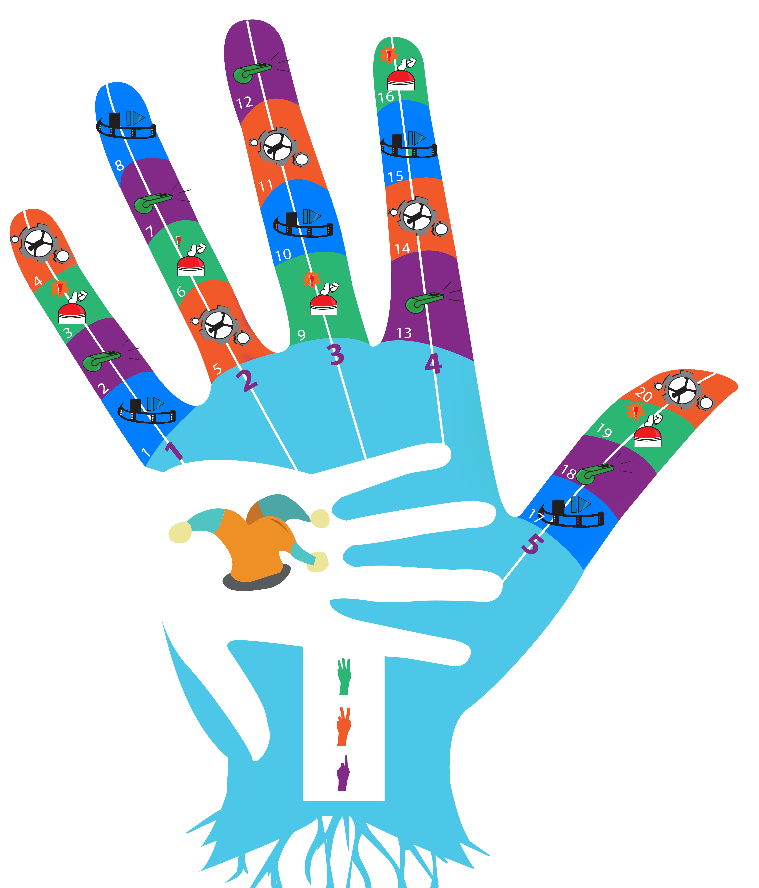

Augmentez les acquis de vos collaborateurs pour un gain immédiat dans l’entreprise :
On retien 10% de ce que l'on écoute
20% de ce que l'on voit
80% de l'action que l'on vit

Optimisez votre budget formation
Vous pouvez acquérir notre dispositif de formation mobile, certifiant avec multi-contenus pour être déployé dans vos structures en illimité
Le dispositif est proposé dans une valise comprenant :
- - Un tapis géant de sol (4m x 3.20m)
- - Les éléments du jeu (quilles, lunettes, chapeau, masques, enveloppes…)
- - Un brassard de capitaine
- - Les contenus numérisés de la formation et e-book imprimable ou téléchargeable pour les apprenants
Exemples de contenus :
- - Prendre en compte et collaborer avec des personnes en situations de handicap
- - Mettre en œuvre une politique bientraitante
- - Mettre en œuvre le projet de vie de la personne accompagnée
- - Documents administratifs de la formation
- - Licence d’utilisation du dispositif
- - Garantie et assistance technique
Nous formons les animateurs/facilitateurs qui sont amenés à utiliser ce dispositif (lien vers le contenu de la formation d’animateur/facilitateur)